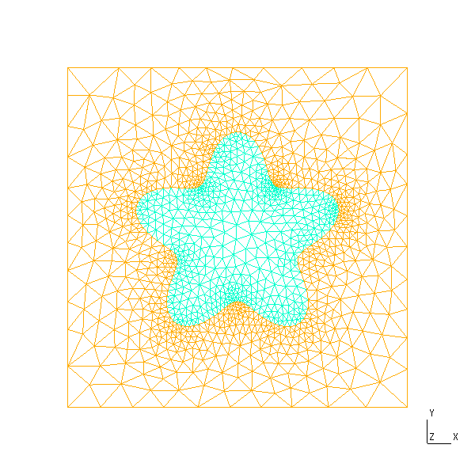
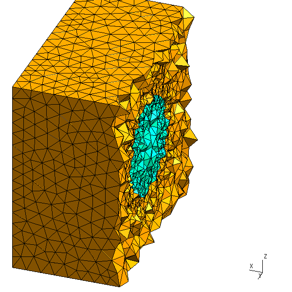
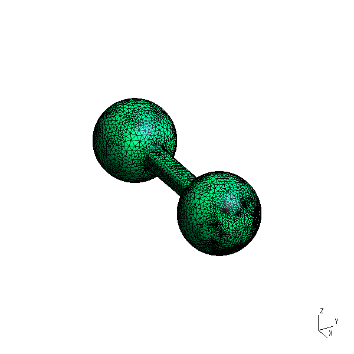

MMG extension
Loading MMG_jll (with MarchingCubes for surface meshes) activates two functions that turn a level set into an unstructured mesh via MMG: LevelSetMethods.export_volume_mesh meshes the interior $\phi < 0$, and LevelSetMethods.export_surface_mesh meshes the interface $\phi = 0$. Both accept optional parameters controlling element sizing:
hgrad— the growth ratio allowed between two adjacent edges.hmin/hmax— lower and upper bounds on the edge sizes.hausd— the maximal distance between the piecewise-linear mesh and the reconstructed ideal boundary.
Each function writes a .mesh file to disk. To see the result we render it with Gmsh; since the rendering boilerplate is the same every time, we wrap it in a small helper that opens a mesh, applies a few display options, and writes a PNG offscreen:
using LevelSetMethods, MMG_jll, MarchingCubes, Gmsh, GLMakie
# render an MMG `.mesh` file to `pngfile`; `options` go straight to `gmsh.option.setNumber`,
# and `hide` lists `(dim, tag)` entities (e.g. a subdomain) to make invisible
function render_mesh(meshfile, pngfile; options = (), hide = ())
GLMakie.closeall() # release any GL context before Gmsh's FLTK
gmsh.initialize()
try
gmsh.option.setNumber("General.Verbosity", 0)
gmsh.open(meshfile)
isempty(hide) || gmsh.model.setVisibility(collect(hide), 0)
for (name, val) in options
gmsh.option.setNumber(name, val)
end
gmsh.fltk.initialize()
gmsh.write(pngfile)
gmsh.fltk.finalize()
finally
gmsh.finalize()
end
return pngfile
endVolume meshes
LevelSetMethods.export_volume_mesh meshes the enclosed region of a 2D or 3D level set (via the mmg2d_O3 / mmg3d_O3 utilities). In 2D:
grid = CartesianGrid((-2, -2), (2, 2), (50, 50))
ϕ = MeshField(grid) do x # a star; see the geometry page
r, θ = hypot(x...), atan(x[2], x[1])
return r - (1 + 0.25 * cos(5θ))
end
volume_mesh2d = LevelSetMethods.export_volume_mesh(ϕ, joinpath(@__DIR__, "volume2D.mesh"))"/home/runner/work/LevelSetMethods.jl/LevelSetMethods.jl/docs/build/volume2D.mesh"render_mesh(volume_mesh2d, joinpath(@__DIR__, "volume2d.png"))XOpenIM() failed
The 3D case is identical — pass a 3D level set; here hausd/hmax refine the mesh around the interface:
grid = CartesianGrid((-1, -1, -1), (+1, +1, +1), (40, 40, 40))
ϕ = MeshField(x -> hypot(x...) - 0.5, grid) # a sphere; see the geometry page
volume_mesh3d = LevelSetMethods.export_volume_mesh(ϕ, joinpath(@__DIR__, "volume3d.mesh"); hausd = 0.02, hmax = 0.15)"/home/runner/work/LevelSetMethods.jl/LevelSetMethods.jl/docs/build/volume3d.mesh"MMG's level-set meshing splits the background box into two subdomains — the enclosed region $\phi < 0$ (reference 3) and the exterior $\phi > 0$ (reference 2) — which Gmsh loads as two elementary volumes. The exterior fills the whole box and hides everything inside it, so we make it invisible (hide = ((3, 2),)) and keep only the ball. Clipping the remaining mesh through $x = 0$ with ClipWholeElements then cuts away whole tetrahedra to expose the interior:
render_mesh(volume_mesh3d, joinpath(@__DIR__, "volume3d.png");
options = ("General.Clip0A" => 1.0, "General.Clip0D" => 0.0, # clip plane x = 0
"General.ClipWholeElements" => 1, "Mesh.Clip" => 1,
"Mesh.VolumeEdges" => 1, "Mesh.VolumeFaces" => 1,
"Mesh.SurfaceEdges" => 0, "Mesh.SurfaceFaces" => 0,
"General.RotationX" => 300, "General.RotationZ" => 160, "General.Trackball" => 0))
The smooth left side is the tetrahedra's outer faces conforming to the spherical interface; the jagged right side is the cutaway, revealing the tetrahedra that fill the enclosed region.
Surface meshes
To mesh the interface itself rather than the interior, use LevelSetMethods.export_surface_mesh, which combines MarchingCubes.jl with MMG's mmgs_O3 surface remesher:
grid = CartesianGrid((-2, -1, -1), (+2, +1, +1), (80, 40, 40))
ϕ₁ = MeshField(x -> hypot((x .- (-1, 0, 0))...) - 0.5, grid)
ϕ₂ = MeshField(x -> hypot((x .- (+1, 0, 0))...) - 0.5, grid)
ϕ₃ = MeshField(x -> maximum(abs.(x) .- (2, 0.25, 0.25) ./ 2), grid)
ϕ = ϕ₁ ∪ ϕ₂ ∪ ϕ₃ # two spheres joined by a bar; see the geometry page
surf_mesh3d = LevelSetMethods.export_surface_mesh(ϕ, joinpath(@__DIR__, "surface3D.mesh"); hausd = 0.01, hmax = 0.1, hgrad = 1.3)"/home/runner/work/LevelSetMethods.jl/LevelSetMethods.jl/docs/build/surface3D.mesh"render_mesh(surf_mesh3d, joinpath(@__DIR__, "surface3d.png");
options = ("Mesh.SurfaceFaces" => 1, "Mesh.SurfaceEdges" => 1,
"General.RotationX" => 300, "General.RotationZ" => 300, "General.Trackball" => 0))